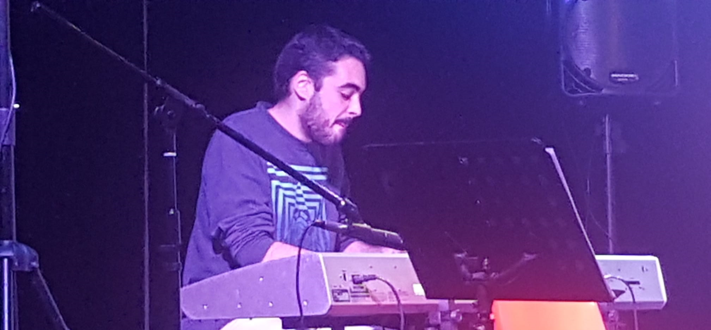

Music as 7th Pyramid
This is my first alias and my main one right now. I focus on the darker and faster side of dance music, especially on Drum & Bass with Jungle details, Halftime, and a lot of atmospheric and melodic parts. I don't usually go hardcore on my tracks, my background in pop/soul/funk music always gets me into the Liquid, more melodic part of these genres. I also like to take elements from UK Dubstep and similar stuff.
Before focusing on those, I also made some House/Techno-ish tunes at 12X bpm, some dubstep beat stuff and other kinds of things, even Hip Hop.
You can find all my music in my BandCamp page at music.7thpyramid.es. These are some of my latest tunes:
Music as Mark II
While the idea of creating a new alternative alias and separating all the genres I work with in two groups started around 2018, I released the first track under the name "Mark II" on June 2019. I'm using use this alias for my DJing stuff (I sometimes mix Disco House and other kinds of groovy House) as well as for my House productions (and probably some Garagish things in the future).
You can find all "Mark II" releases again at BandCamp: music.7thpyramid.es. Some of the tracks are also listed here:
Keyboard playing
I have a pretty long story with "Maestro Gombau" public music school in Getafe. I studied music and keyboard playing for 9 years, playing in bands for 6 of those (at least 4 in Salida de Emergencia). I took a 4 year break to get more into electronic music making, and I came back as a keyboardist to this music school in September 2019.
I played the keyboards (mainly pianos and EPs, but also some organs and synth pads here and there) in a pop/country/funk band there for two years until the band was dissolved in 2021.
Electronic music
I've been into electronic music not that long. I was mainly into different kinds of Metal thanks to my father, and around 2013 I first listened to a Brostep track. The uniqueness and totally different focus of the sound really intrigued me, and it also shared the same raw power of the music I liked. From there I discovered the commercial side of Drum & Bass (mind you, apart from the beat pattern and tempo, Brostep and commercial D&B are pretty much the same), and years after I fell into the more underground scenes. I didn't get the thing with House music until 2015 or so with the rise of Future House (and I discovered it thanks to my brother).
I make electronic music and I've been doing it since 2014. I work with Reaper and FL Studio, and an assortment of plugins. Reaper allows me to quickly work with and edit audio recordings, as well as MIDI clips. It's my "main" DAW, and the best things about it are the performance and flexibility of the program itself - the programming standards of the developer seem to align really well with what I think it's the "ideal", even the licensing system (affordable price and no online requirements, only a license file). I use FL Studio mainly to start tunes and write the main drum parts.
As for plugins, I mainly use U-he Hive and Repro (for modern and vintage sounds respectively). When I need 90's pads and cheesy sounds for Jungle atmospheres or vintage House tracks, I quickly open either M1 or Wavestation from Korg. I don't find modular synths to play well with my workflow, though, so even if I think they are interesting to play with, I don't use them much.
In terms of effects, I have a mixed folder of plugins from Valhalla, Klanghelm, Melda and Tokyo Dawn Labs alongside the trusty Reaper defaults. I prefer to use those native ones when possible, though.
My workspace
Still don't have a setup photo.This is the equipment I have at home, and this is where I make most of my stuff. I use a PC with Reaper as my main DAW, with FL Studio as the secondary. As for plugins I mostly use Hive, Repro and Vital, the stock Reaper plugins, and Valhalla, Tokyo Dawn Labs, Klanghelm and Melda effects. I also have a decent sample folder with around 73 GB of sounds.
All my music is made "in the box" and I try to keep the usage of plugins to the minimum. I try to use as much online DRM free audio software (with serial number or license file based authorization systems) and as portable as possible (they are either a .dll or .vst3 you can just drop on a fresh install, or the installer does not need internet connection). But it's not my top priority, and if a really great tool uses online DRM, it's not a dealbreaker.
My main software setup (in no discernible order, DAWs first) is:
- Cockos Reaper
- Image Line FL Studio
- U-he Hive, Repro
- Korg M1, Wavestation
- Matt Tytel Vital
- Valhalla DSP Delay, VintageVerb
- Klanghelm DC8C3, MJUC, SDRR2
- Tokyo Dawn Labs Limiter 6 GE
- MeldaProduction (various)
Other music projects
I have been learning and working about Hip Hop and Trap beats production with my partner in musical crime Omar Alsayad, with the objective of being able to work (semi)professionally on them. It's a really interesting topic because right now it's a thriving scene and also the older classic tracks from the genre have a groovy style I like to (try to) include in my productions.
Other stuff I have worked on is videogame music. I collaborated with a small, independent game studio called Triunity Studios working in the music and sound effects of two Android games: Rasta Run and Ball Evolution. You can find a demo of the soundtrack for the second game here.
Finally, I attended the Utrecht Summer School course on Film Music for Beginners, where we learned how to get started in film music arrangements. During the practical hours we worked on the music in some scenes, and these are mine (don't mind the YouTube audio quality, it's awful):
Scene 1: This is the kind of thing I know how to do: sad/tense ambiences with electronic sequences and strings. This one is pretty convincing and overall I think I got a nice result.
Scene 2: With this other one I wanted to unleash some breakbeat force and decided to go for a dance/film hybrid sound. It's not perfectly polished, especially in some parts like the climax (just too much drums) but the average quality is decent enough.